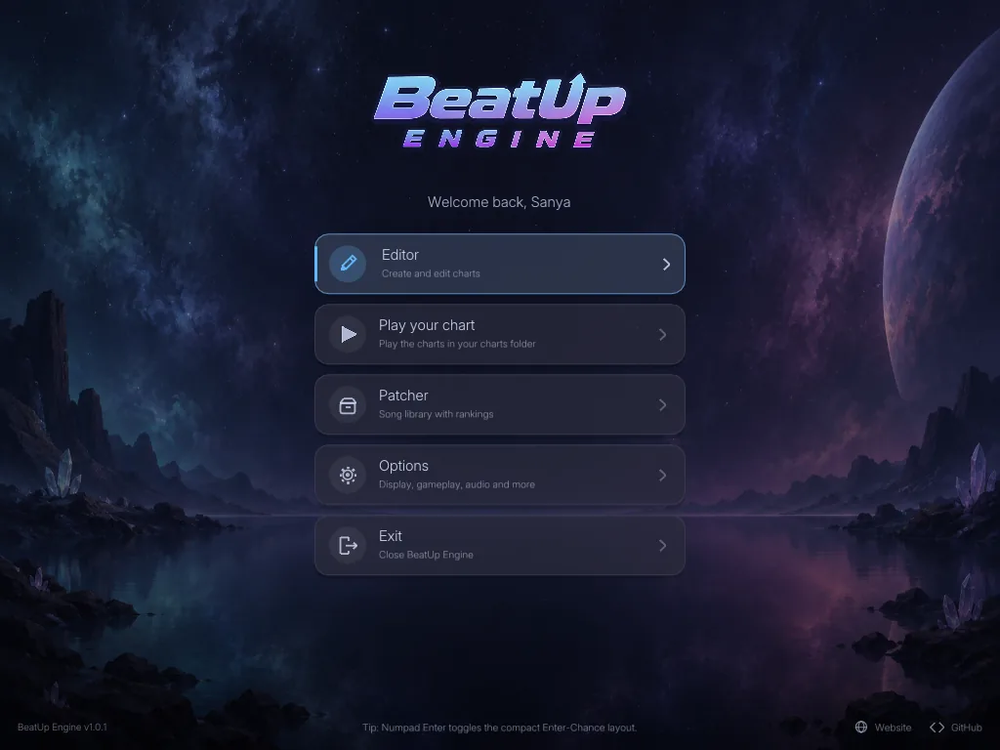

Rhythm engine · Final Public Release v1.2
BeatUp Engine
A rhythm-game engine with precise timing, an integrated chart editor and a patcher. Version 1.2 is the final public release (v1.3+ builds and new launchers are under restricted access). Version 1.2 adds the Auditor Mode for reviewing and documenting charts.
View BeatUp Engine